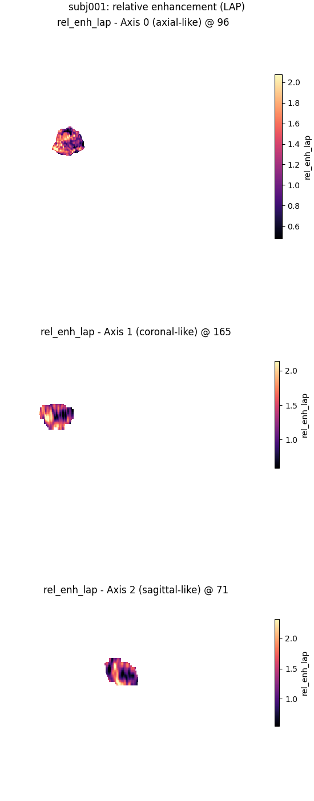
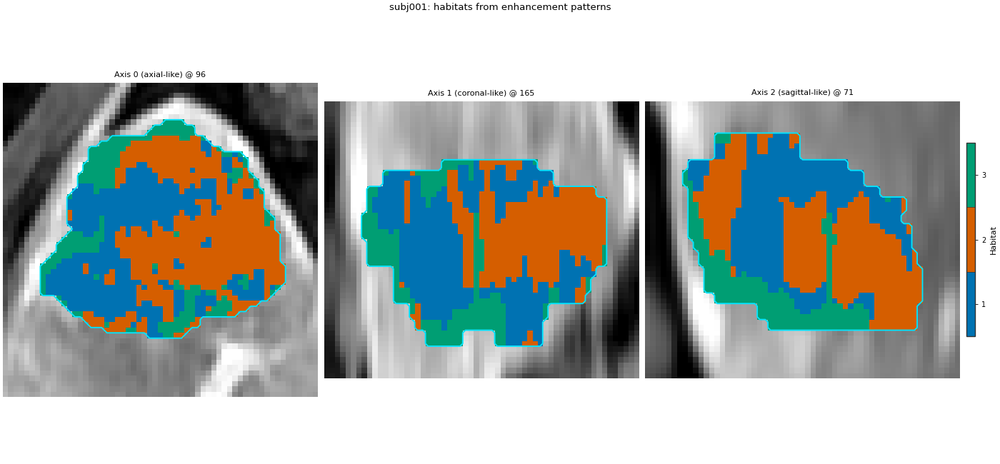

备注
Go to the end to download the full example code.
增强模式#
背景。 动态对比增强（DCE）MRI 记录肿瘤在多期对比剂摄取与廓清。原始强度混合绝对亮度与动力学模式。导出图（比值、差、平均、动力学斜率或自由表达式）将模式放入生境所用特征表。
目的。 为本演示构建 HABIT 提供的全部增强相关计算器（ratio、difference、average、expression、kinetic），检查其列，并在基于 expression 相对增强集上拟合小型逐受试者生境图。
何时使用。 When 生境 should follow contrast uptake / wash-out rather than absolute signal level.
关键词。
比率 / 差异 / 平均值 —— 将强度块转化为派生块的组合器。
expression —— 期相图像上的命名公式（AST 安全）。
kinetic —— 四个有序期相的 wash-in / wash-out 斜率（需每受试者采集时间）。
加载含四个 DCE 时相的单受试者#
将 DATA / MODALITIES / ROI 更改为您预处理的布局。sphinx_gallery_thumbnail_number = 1
from pathlib import Path
import matplotlib.pyplot as plt
from habit.contracts import Cohort, cohort_from_directory
from habit.datasets import fetch_demo
from habit.habitat_model import KMeansHabitatModelFitter
from habit.pipeline import voxel_units
from habit.spec import Spec
from habit.viz import plot_habitat_overlay, plot_voxel_texture_slice
from habit.voxel_features import (
ExpressionVoxelFeatures,
KineticVoxelFeatures,
build_voxel_extractor,
)
DATA = fetch_demo()
MODALITIES = ("pre_contrast", "LAP", "PVP", "delay_3min")
ROI = "LAP"
subject = cohort_from_directory(DATA, modalities=MODALITIES, roi=ROI)[0]
print(subject.subject_id, sorted(subject.images))
Path("out").mkdir(exist_ok=True)
HABIT demo data (cached)
DATA (preprocessed root): C:\Users\dongm\.habit_data\demo-data-v1\preprocessed
On-disk inventory of this folder:
subjects (5): subj001, subj002, subj003, subj004, subj005
image series: LAP, PVP, delay_3min, pre_contrast
mask keys: LAP, PVP, delay_3min, pre_contrast
example image: images/subj001/delay_3min/WATER__BH_Ax_LAVA_Flex_3min_Series0012.nrrd
example mask: masks/subj001/delay_3min/WATER__BH_Ax_LAVA_Flex_10min_Series0017_mask.nrrd
Your own data must use the same folder tree (change IDs / series names):
DATA/
images/<subject_id>/<modality>/<one image file>
masks/<subject_id>/<roi>/<one mask file>
Then load it with the same call the demos use:
cohort = cohort_from_directory(DATA, modalities=("LAP",), roi="LAP")
Swap DATA / modalities / roi to match your tree. Mask key is often the
same as one image series (here LAP).
subj001 ['LAP', 'PVP', 'delay_3min', 'pre_contrast']
比值、差值与平均组合器#
每棵树为 Spec ：combiners 在 children 下列出子提取器。 ratio / difference 需两子； average 一个或多个。
ratio_field = build_voxel_extractor(
Spec(
"ratio",
{
"children": [
{"name": "raw", "params": {"modalities": ["LAP"], "roi": ROI}},
{
"name": "raw",
"params": {"modalities": ["pre_contrast"], "roi": ROI},
},
]
},
)
)(subject)
diff_field = build_voxel_extractor(
Spec(
"difference",
{
"children": [
{"name": "raw", "params": {"modalities": ["LAP"], "roi": ROI}},
{
"name": "raw",
"params": {"modalities": ["pre_contrast"], "roi": ROI},
},
]
},
)
)(subject)
avg_field = build_voxel_extractor(
Spec(
"average",
{
"children": [
{"name": "raw", "params": {"modalities": ["LAP"], "roi": ROI}},
{"name": "raw", "params": {"modalities": ["PVP"], "roi": ROI}},
]
},
)
)(subject)
print("ratio columns:", list(ratio_field.feature_names))
print("difference columns:", list(diff_field.feature_names))
print("average columns:", list(avg_field.feature_names))
ratio columns: ['ratio-LAP-pre_contrast']
difference columns: ['diff-LAP-pre_contrast']
average columns: ['average-raw-raw']
表达式图（相对增强与洗出）#
eps avoids division by zero. Each key becomes one column.
expression = ExpressionVoxelFeatures(
features={
"rel_enh_lap": "(LAP - pre_contrast) / (pre_contrast + eps)",
"rel_enh_pvp": "(PVP - pre_contrast) / (pre_contrast + eps)",
"rel_enh_delay": "(delay_3min - pre_contrast) / (pre_contrast + eps)",
"washout": "(LAP - delay_3min) / (LAP + eps)",
},
roi=ROI,
)
expr_field = expression(subject)
print("expression columns:", list(expr_field.feature_names))
print(expr_field.feature_frame().head())
expression columns: ['rel_enh_lap', 'rel_enh_pvp', 'rel_enh_delay', 'washout']
rel_enh_lap rel_enh_pvp rel_enh_delay washout
0 1.388759 1.412178 1.330211 0.024510
1 1.324201 1.438356 1.269406 0.023576
2 1.453303 1.478360 1.243736 0.085422
3 1.353070 1.350877 1.234649 0.050326
4 1.188559 1.398305 1.175847 0.005808
动力坡度（四个阶段 采集时间）#
洗入/洗出需真实期间隔。演示包无时间戳表，本页提供小合成表（与真实研究从文件加载同形）。前对比 lead time 在提取器内处理。
PHASE_TIMES = {
subject.subject_id: {
"LAP": "10-00-30",
"PVP": "10-01-00",
"delay_3min": "10-03-00",
}
}
kinetic = KineticVoxelFeatures(
timestamps=PHASE_TIMES,
phases=list(MODALITIES),
roi=ROI,
)
kin_field = kinetic(subject)
print("kinetic columns:", list(kin_field.feature_names))
print(kin_field.feature_frame().head())
kinetic columns: ['wash_in_slope', 'wash_out_slope_lap_pvp', 'wash_out_slope_pvp_dp']
wash_in_slope wash_out_slope_lap_pvp wash_out_slope_pvp_dp
0 23.719999 0.333333 -0.291667
1 23.199999 1.666667 -0.616667
2 25.519999 0.366667 -0.858333
3 24.679999 -0.033333 -0.441667
4 22.439999 3.300000 -0.875000
由 expression 图得到的生境#
单受试者拟合：生境 id 仅属该患者。
units = voxel_units(expr_field)
fitter = KMeansHabitatModelFitter(n_habitats=3, n_init=3)
fitter.set_random_state(0)
model = fitter.fit([units], cohort=Cohort([subject], name="one"))
habitat_map = model.assigner()(units)
print(model.summary())
fig = plot_voxel_texture_slice(
expr_field,
feature="rel_enh_lap",
title=f"{subject.subject_id}: relative enhancement (LAP)",
)
fig.savefig("out/enhancement_rel_enh_lap.png", dpi=150, bbox_inches="tight")
plt.show()
fig = plot_habitat_overlay(
subject.image("LAP"),
habitat_map,
title=f"{subject.subject_id}: habitats from enhancement patterns",
crop_to="labels",
)
fig.savefig("out/enhancement_habitats.png", dpi=150, bbox_inches="tight")
plt.show()


HabitatModel kmeans-550300eb7e79e3f6
habitats : 3
features (4) : rel_enh_lap, rel_enh_pvp, rel_enh_delay, washout
defining cohort : n=1, name=one
modalities : pre_contrast, LAP, PVP, delay_3min
cohort digest : bbf1d587b6155a53...
produced by : habitat_model_fitter.kmeans
habit version : 3.0.0
random seed : 0
preprocessing state: inertia, validation
F:\work\habit_project\habit\viz\habitat_overlay.py:806: UserWarning: Display geometry conflict: image/anatomy direction does not match mask/label direction. Using the mask/label direction so coronal/sagittal superior-up follows the labelled anatomy. Pass direction= to override.
resolved_direction, resolved_spacing = resolve_display_geometry(
如何解读结果#
Ratio, difference, average, expression, and kinetic all produced columns on this 受试者. The three 生境 below are defined only inside this patient; do not compare their ids to another 受试者's map.
Next#
脚本总运行时间： （0 分 8.980 秒）